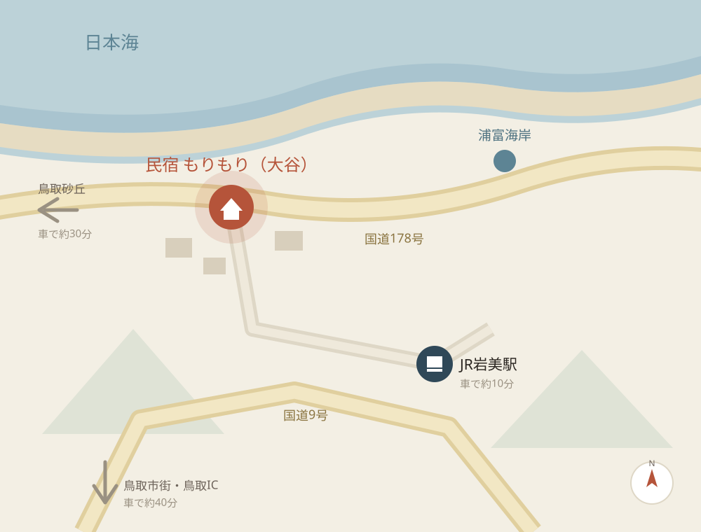

大谷海岸
宿の目の前です。水着のまま出て、そのまま海へ。泳いで戻ってきて、デッキでBBQという一日が過ごせます。
鳥取県岩美町大谷。大谷海岸が目の前です。
| 住所 | 鳥取県岩美郡岩美町大谷897-1 |
|---|---|
| 電話 | 090-3632-5155 |
| 海まで | 大谷海岸まで徒歩1分 |
| 最寄り駅 | JR山陰本線 岩美駅（車で約10分） |
| 駐車場 | 3台（無料） 4台以上の場合はご相談ください |
| チェックイン | 15:00（チェックアウト 10:00） |
※地図は概略図です。所要時間は目安ですので、実際の交通状況によって前後します。
鳥取駅から普通列車で約25分。特急停車駅ではありませんのでご注意ください。
車で約10分です。タクシーは台数が少ないため、あらかじめ手配されることをおすすめします。
車で約40分。レンタカーでお越しになると、周辺の観光にも便利です。
国道9号を東へ、岩美町内で国道178号方面へ。約40分です。
中国自動車道・鳥取自動車道を経由して鳥取ICへ。大阪から約3時間30分が目安です。
国道178号を西へ。浦富海岸を過ぎて大谷方面へ進みます。
台数を超える場合は、あらかじめお知らせください。近隣の駐車場をご案内します。
番地だけではたどり着きにくい場合があります。お越しになる前にお電話いただければ、 目印になる建物をお伝えします。090-3632-5155

宿の目の前です。水着のまま出て、そのまま海へ。泳いで戻ってきて、デッキでBBQという一日が過ごせます。
岩美町は「Free!」の舞台のモデルになった町です。この家も作中に登場しました。駅や港など、町のあちこちに見覚えのある景色があります。
山陰海岸ジオパークを代表する海岸線。透明度の高い入り江が続き、遊覧船やシーカヤックも楽しめます。
言わずと知れた大砂丘。朝と夕方は人が少なく、風紋がきれいに見えます。
地元の魚や野菜が並びます。BBQの食材はここで揃えるのがおすすめです。
山陰でも古い歴史をもつ温泉地。日帰り入浴ができる施設があります。
所要時間はいずれも目安です。当宿はアニメ作品の公式施設ではありません。 聖地巡礼でお越しの際は、近隣のお住まいの方へのご配慮をお願いします。